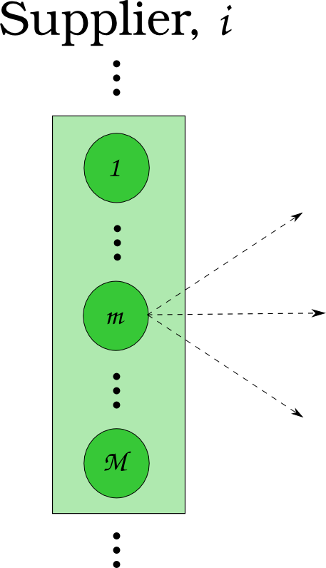
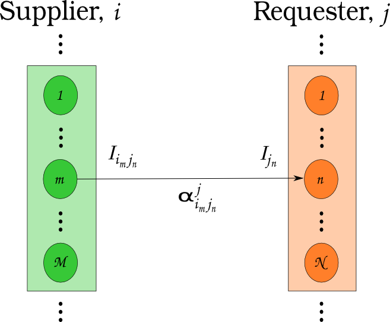

CEP 17 - Resource Tracking and Interfaces Re-Re-Redo


| CEP: | 18 |
|---|---|
| Title: | Dynamic Resource Exchange Procedure |
| Last-Modified: | 2013-10-31 |
| Author: | Matthew Gidden |
| Status: | Draft |
| Type: | Standards Track |
| Created: | 2013-09-02 |
An updated procedure for determining dynamic resource exchanges is presented. It occurs nominally in four phases: a request for bids, a response to the request for bids, preference assignment, and resolution. The first three phases encompass an information gathering procedure, providing generic information to any market exchange solution procedure. The final phase is modular in that any algorithm can be used to solve the exchange. This modular phase takes the place of the current implementation of MarketModels. The procedure is informed by agent-based supply chain modeling literature [1] with modifications as required for our nuclear-engineering domain specific information.
The current implementation of Markets in Cyclus includes a base MarketModel class which is intended to be derived from by concrete, dynamically loaded, user-defined classes. Markets are assigned specific commodities, i.e., there is no communication across demand for multiple commodities. Markets act in the simulation during the resolve step, which occurs after the tick and before the tock for each timestep.
Markets are communicated with through Messages. Communication to Markets utilize the Transaction class to define whether the communication is an offer or request for the Market’s commodity. Communication is initialized by Facilities, but there is no Cyclus core support for this operation. Individual derived Facilities (e.g., the SinkFacility and SourceFacility in Cycamore) define this functionality during their HandleTick functions. This interaction is invoked during the tick phase in the current facility invocations purely by practice. There is no requirement for such behavior; for example, one could send an offer or request during the tock phase, which would be ignored until the proceeding resolve step. In general lookups for specific markets and dynamic casts to communicate with those markets are required.
The MarketModel class defines a pure virtual function, Resolve, which is used by derived classes to determine the specific algorithm by which the market is to be resolved. Markets receive proposed Transactions through their Communicator class interface, which requires the ReceieveMessage function to be defined by the market. The Resolve function then invokes the derived-class algorithm to determine matches for the given set of offers and requests.
This class structure and interaction has worked well for a proof-of-prototype use of Cyclus to model simple, once-through fuel cycles. However, an extension or refactor is necessary to model more complicated fuel cycles for a number of reasons. First, there is no support for facilities that can offer or request resources across multiple commodities if a capacity is included. The current implementation of the market system can only provide this notion by ordering the markets in some arbitrary manner. Second, and perhaps least important of these reasons, is that the Transaction class is ambiguous with respect to proposed offers, requests, and matched offers and requests. This ambiguity can be addressed during a refactor to provide clarity to future developers. Third, there is no defined structure to the market-facility interaction. This interaction is the core purpose of Cyclus’ Dynamic Resource Exchange concern, but users and developers are required to define their own interactions (e.g., sending offers during the tick phase). The original conception of the tick-tock paradigm was to define a notion of time before the resource exchange (i.e., a pre-step) and after the resource exchange (i.e., a post-step). The current implementation includes the resource exchange concern during both of these phases, complicating the process and mixing concerns. Finally, there is no response mechanism for facilities to delineate between resources of a given commodity. The current implementation places this concern upon the market’s resolution algorithm, rather than on the facility via some communication mechanism, again muddying the concerns associated with the resource exchange.
The proposed refactor addresses each of the issues provided in the previous section. The notion of market models is redefined, separating the collection of supply-demand information from the algorithm used to match suppliers with consumers. The information gathering framework is structured and core-based. It is top-down in the sense that it queries facilities for their supply and demand rather than requiring facility-based notifications. Accordingly, concerns are appropriately separated: the information is gathered by the core at the beginning of the resolve step, allowing facilities to inform a given market algorithm; market algorithms determine the set of offers and requests to be matched; and the core sends out resolved transactions. Message passing to and from markets is addressed by the framework, providing facilities, institutions, and regions each with specific, defined agency.
Supply-demand determination at any given time step occurs in nominally three steps, or phases, and the associated terminology is taken from previous supply chain agent-based modeling work [1]. Importantly, this information-gathering step is agnostic as to the actual matching algorithm used, it is concerned only with querying the current status of supply and demand and facility preference thereof in the simulation.
The first phase allows consumers of commodities to denote both the quantity of a commodity they need to consume as well as the target isotopics, or quality, by posting their demand to the market exchange. This posting informs producers of commodities what is needed by consumers, and is termed the Request for Bids (RFB) phase. Consumers are allowed to over-post, i.e., request more quantity than they can actually consume, as long as a corresponding capacity constraint accompanies this posting. Further, consumers are allowed to post demand for multiple commodities that may serve to meet the same combine capacity. For example, consider an LWR that can be filled with MOX or UOX. It can post a demand for both, but must define a preference over the set of possible commodities it can consume. Another example is that of an advanced fuel fabrication facility, i.e., one that fabricates fuel partially from separated material that has already passed through a reactor. Such a facility can choose to fill the remaining space in a certain assembly with various types of fertile material, including depleted uranium from enrichment or reprocessed uranium from separations. Accordingly, it could demand both commodities as long as it provides a corresponding constraint with respect to total consumption.
At the completion of the RFB phase, the market exchange will have a set of consumption portfolios, , for each requester in the exchange, shown as the orange box in Figure 1. Each portfolio consists of a set of requests, , a cardinal preferential ordering over the requests, , and possibly a set of constraints over the requests, . A constraint can be associated with more than one request. Take the previous example of MOX and UOX for an LWR. Each is a separate request, but a constraint may be concerned with the combination of the two. Another example is a repository that may request many commodities, but has a radiotoxicity constraint over any commodities it receives for a given time step.
A request consists of a quantity, , and a target isotopic vector, . Consumers are allowed to offer the null set of isotopics as their profile, effectively providing no information. In general, a requester may have more than one request (nodes in Figure 1) per commodity. A prime example is a reactor that chooses to requests fuel assemblies, of which they request many.

Figure 1: A Requester during the RFB Phase, where a collection of requests (as nodes) is shown.
The second phase allows suppliers to respond to the set of consumption portfolios, and is termed the Response to Request for Bids (RRFB) phase (analogous to Julka’s Reply to Request for Quote phase). Each consumption portfolio is comprised of requests for some set of commodities, and suppliers of those commodities are allowed to respond to demand. Suppliers, like consumers, are allowed to offer the null set of isotopics.
A supplier may have its production constrained by more than one parameter. For example, a processing facility may have both a throughput constraint (i.e., it can only process material at a certain rate) and an inventory constraint (i.e., it can only hold some total material). Further, the facility could have a constraint on the quality of material to be processed, e.g., it may be able to handle a maximum radiotoxicity for any given time step which is a function of both the quantity of material in processes and the isotopic content of that material.
At the completion of the RRFB phase, the market exchange will have a set of supplier responses for each request. The supplier responses define the possible connections between supplier and producer facilities, i.e., the arcs in a graph of a matching problem. A response is comprised of a proposed isotopic profile the supplier is able to provide. Furthermore, constraints can be associated with the set of responses to be applied by the market matching algorithm. A constraint must identify the requests that it is associated with, define a capacity, and define a translation function. The translation function takes a request as an argument and returns a value in the units of the constraint. A prime example is an enrichment facility, which may be able to enrich many orders, but is constrained by the total SWUs it can provide.
Figure 2: A Supplier during the RRFB Phase, where a collection of commodity supplies (as nodes) is shown.
The final phase of the information gathering procedure allows consumer facilities to adjust their set of preferences and for managers of consumer facilities to affect the consumer’s set of preferences, as described in the remaining sections. Accordingly, the last phase is termed the Preference Adjustment (PA) phase. Preference adjustments can occur in response to the set of responses provided by producer facilities. Consider the example of a reactor facility that requests two fuel types, MOX and UOX. It may get two responses to its request for MOX, each with different isotopic profiles of the MOX that can be provided. It can then assign preference values over this set of potential MOX providers. Another prime example is in the case of repositories. A repository may have a defined preference of material to accept based upon its heat load or radiotoxicity, both of which are functions of the quality, or isotopics, of a material. In certain simulators, limits on fuel entering a repository are imposed based upon the amount of time that has elapsed since the fuel has exited a reactor, which can be assessed during this phase. The time constraint is, in actuality, a constraint on heat load or radiotoxicity (one must let enough of the fission products decay). A repository could analyze possible input fuel isotopics and set the arc preference of any that violate a given rule to 0, effectively eliminating that arc.
It should be noted that these preferences are requester based. This choice is based on the current simulation design notion of requesters having a preference over possible inputs. It is possible that in the future, one would like to model the notion of supplier preference (i.e., moreso than the implicit nature currently provided by allowing suppliers to set the transaction quality and whether to respond to the transaction at all). One suggestion may be to allow suppliers to also have a supply preference, and to use the average of them in the objective function, but this gets into even murkier modeling/simulation ground. Another would be to move the paradigm more towards economics and have the suppliers set the cost of a transaction, which they could tailor to the requester. However, this draws in a whole other field of bidding that requires much more rigor and thought as to its validity and implementation.
Figure 3: A supplier-consumer pair with request isotopics, response isotopics, and an associated preference.
Institutions and Regions in Cyclus are provided in order to add granularity to the levels of relational modeling available to a user or developer. Both types of agents or models in Cyclus can possibly be allowed to affect preferences during the PA phase. A slightly longer discussion is included below.
Facilities in Cyclus are abstracted to either consumers or suppliers of commodities, and some may be both. Supplier agents are provided agency by being able to communicate to the market-resolution mechanism a variety of production capacity constraints in second phase of the information gathering methodology. Consumer agents are provided agency by being able to assign preferences among possible suppliers based on the supplier’s quality of product. Because this agency is encapsulated for each agent, it is possible to define strategies that can be attached or detached to the agents at run-time. Such strategies are an example of the Strategy design pattern [2].
Institutions in Cyclus manage a set of facilities. Facility management is nominally split into two main categories: the commissioning and decommissioning of facilities and supply-demand association. The goal of including a notion of institutions is to allow an increased level of detail when investigating regional-specific scenarios. For example, there exist multi-national enterprises, such as AREVA, that operate fuel cycle facilities in a variety of countries, or regions. Furthermore, there are international governmental organizations, such as the IAEA, have proposed managing large fuel cycle facilities that service many countries in a given global region. A fuel bank is an example of such a facility.
Accordingly, institutions in this proposal are able to augment the preferences of supplier-consumer pairs that have been established in order to simulate a mutual preference to trade material within an institution. Of course, situations arise in real life where an institution has the capability to service its own facilities, but choose to use an outside provider because of either cost or time constraints. Such a situation is allowed in this framework as well. It is not clear how such a relationship should be instantiated and to what degree institutions should be allowed to affect their managed facilities’ preferences. This issue lies squarely in the realm of simulation design decisions, part of the art of simulation. Accordingly, the strategy of affecting preferences is encapsulated within the full preference allocation phase in order to allow for further modularity of relational options between agents.
Regions are provided agency by their ability to affect preferences between supplier-consumer facility pairs in the PA phase, much like institutions. The ability to perturb arc preferences between a given supplier and a given consumer allows fuel cycle simulation developers to model relatively complex interactions at a regional level, such as tariffs and sanctions. Constraints to cross-border trading can also be applied. For example, a region could place constraints on the total amount of a given commodity type that is able to flow into it or out of it into a different region. Such constraints could applied not only to bulk quantities of a commodity, but also to the quality of each commodity. Such a mechanism could be used to model interdiction of highly-enriched uranium transport, for example.
Figure 4: Information Gathering Phase Order.
Upon completion of the information gathering step, the market resolution function will be called. The current “null market” behavior is defined as a “greedy matching” algorithm. Such an algorithm as currently implemented naively matches consumers with suppliers without particular regard for preference of commodity or resource. Accordingly, a similar algorithm will be implemented that greedily matches supplier and requester based on the requester’s highest preference, accounting for multiple commodity markets and associated production capacities. The matching algorithm used by a market is modular, and replaces the notion of the MarketModel.
Each major phase method and associated classes are treated. Method inputs and outputs are described as well as known issues dealing with their implementation. The members and methods of proposed classes are also described. Because the phases utilize new classes and containers, those are described first.
The major new datastructures required for this proposal are:
Reference implementation (in /src) and tests (in /tests) for each can be found in the CEP18 branch.
A template approach has been taken, delineating, for instance, a material request, Request<Material>, from a GenericResource request, Request<GenericResource>. The current behavior (i.e., only using parent classes and dynamic casting to derived classes) can be invoked by templating on the Resource type, i.e., Request<Resource>. See the capacity constraint tests for an example of this range of behavior.
The resource exchange is implemented through coordination of two classes, the ResourceExchange and the ExchangeContext, both of which are implemented with tests in the CEP18 branch.
The ExchangeContext retains the current state of the exchange, including information regarding the players (i.e., requesters and suppliers) as well as information regarding requests and bids. The ResourceExchange initiates the phase order and updates the context state. As currently envisioned, an exchange and context’s lifetime is the single resolution of the exchange at a given time. The exchange is populated with traders as known by the wider simulation context. Both the ExchangeContext and ResourceExchange are templated on the Resource being exchanged, as was the case above. An overview of the exchange implementation follows, noting the state updates of the context at each phase.
Note that the ExchangeContext has no state at the beginning of the phases.
ResourceExchange operations:
ExchangeContext state at end of phase:
ResourceExchange operations:
ExchangeContext state at end of phase:
ResourceExchange operations:
/// @brief allows a trader and its parents to adjust any preferences in the
/// system
void DoAdjustment(Trader* t) {
typename PrefMap<T>::type& prefs = ex_ctx_.Prefs(t);
Model* m = dynamic_cast<Model*>(t);
while (m != NULL) {
cyclus::AdjustPrefs(m, prefs);
m = m->parent();
}
};
For full implementation details, please see the CEP18 branch.
ExchangeContext state at end of phase:
The MarketAlgorithm is a virtual base class for possible algorithms to solve the supply-demand matching algorithm.
The input for the algorithm is the full set of Requests, Bids, preferences, and CapacityConstraints.
The output for the algorithm is Request-Bid pairs such that CapacityConstraints are not exceeded.
This CEP proposes a number of backwards incompatibilities.
This document is released under the CC-BY 3.0 license.
References
| [1] | (1, 2) N. Julka, R. Srinivasan, and I. Karimi. Agent-based supply chain management-1: framework. Computers & Chemical Engineering, 26(12):1755–1769, 2002. |
| [2] | John Vlissides, R Helm, R Johnson, and E Gamma. Design patterns: elements of reusable object-oriented software. Reading: Addison-Wesley, 1995. |
{kind=link}
{kind=link}